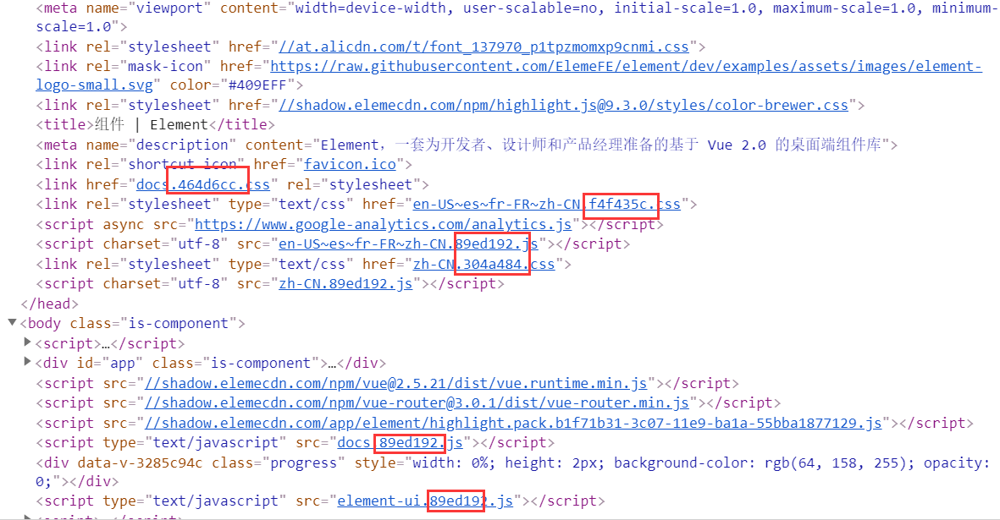
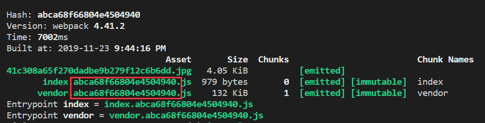
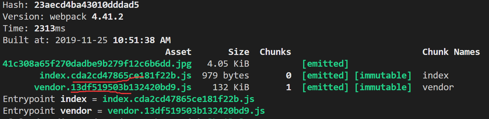
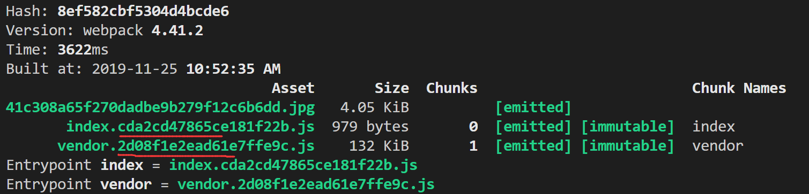
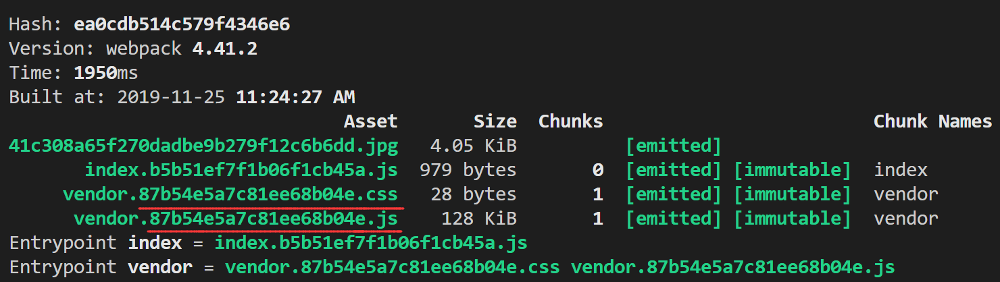
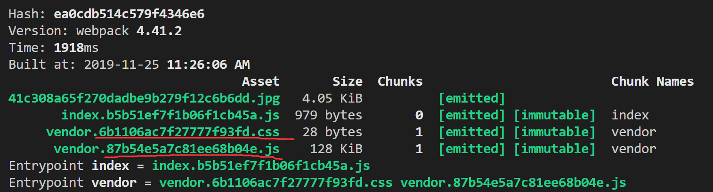
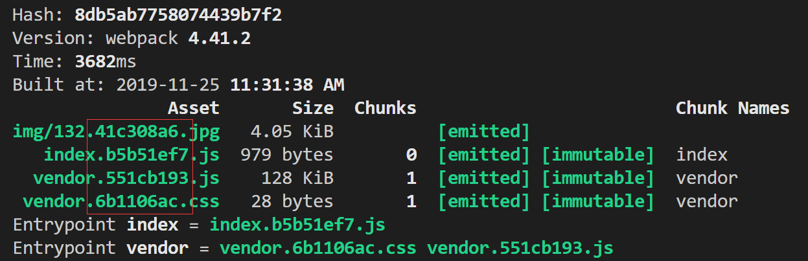

本文介绍了webpack中的三种文件指纹的用法及其区别。
什么是文件指纹
所谓的文件指纹就是一个hash值（或hash值的一部分），我们可以通过文件指纹来实现前端资源的增量更新。具体而言，就是在资源名上添加一段hash值，通过浏览器的缓存策略，实现未改动的资源不重复下载。比如Element UI官网中，就有使用到文件指纹：

使用
在webpack中，我们可以通过配置output的filename字段，来控制输出的文件名。因此，我们可以在这边加上[hash]等占位符，来实现文件指纹。
例如，我们配置webpack.config.js内容如下：
1 | // webpack.config.js |
运行npm run build后就能得到如下输出：

可以看到，输出的文件名上已经多出了一串hash值。但是，我们也可以看到，这两个文件名上的hash是一样的，也就是说，每次构建出来，每个文件都是一个新构建的，不管其是否真正改动过。这样并不符合我们的预期：只更新我们有改动的文件，而未改动的不需要用户去下载。
为此，我们根据不同文件，使用webpack给我们提供的不同占位符：[hash]、[chunkhash]、[contenthash]
[hash]
hash是根据整个项目的构建求出来的，如果使用了hash，那么每个模块都会有同样的hash值，不管这个模块是不是又改动过。因此不能达到增量更新的效果。
[chunkhash]
chunkhash是由chunk计算的得出的hash值，chunk指的是模块，这个hash值就是模块内容计算出来的hash值。
用法
1 | // webpack.config.js |
运行npm run build后就能得到如下输出：
改变前：

改变vendor.js后：

可以看到vendor的hash已经改变了，而index得没有发生改变。
注意：为了让hash值保持稳定，还应添加NamedModulesPlugin(开发环境)或HashedModuleIdsPlugin(生产环境)，这两个plugin能够让webpack使用相对路径而非模块id来命名模块。
如果我们将js中的css抽取成单独的文件后，并且也是用chunkhash，会出现这样一个问题：仅仅改动了js文件，css也跟着一起改了，这就导致了不必要的更新。

为此，我们在css等文件中，需要使用下面的contenthash这个占位符。
[contenthash]
contenthash用于求文件内容的hash值。这个hash值只与文件内容有关，而与chunk无关。
首先，我们使用MiniCssExtractPlugin将js中的css抽取出来：
1 | // webpack.config.js |
这里需要注意的是，loader上，我们使用了MiniCssExtractPlugin.loader而不是style-loader，因为style-loader的用处是将css放到<style>标签中，与MiniCssExtractPlugin.loader冲突了。
运行npm run build就能看到css的hash值已经与js无关了：

最后
我们可以看到上面生成的hash都是比较长的，我们可以在占位符上指定我们要的长度，来生成我们想要的位数，如：[hash:8]、[chunkhash:8]、[contenthash:8]
